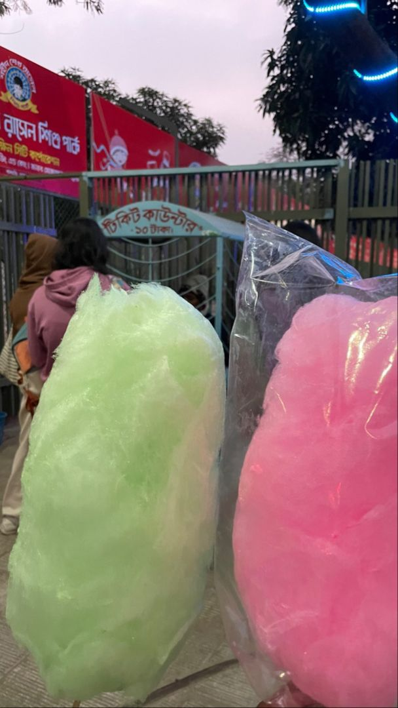

Food safety officials raid cotton candy shops on Chennai’s Marina beach; chemical contamination suspected
The FSSAI officials said they would be taking samples of other food items as well to check contamination.
The Food Safety and Standard Authority of India (FSSAI)officials raided the cotton candy shops in Marina beach in Chennai days after a similar raid was conducted in Puducherry where the samples of the cotton candy confirmed the presence of dye, harmful for consumption.
A team of officials led by P Satheesh Kumar, the dedicated food safety officer in Chennai, raided the shops on Thursday evening.
While addressing the reporters, he noted following the media reports of a raid in Puducherry, the government directed the authorities to conduct raids and send the samples to the laboratory to check the presence of Rhodamine B.
“Our teams of officials are conducting checks throughout the city. The cotton candies are sold in large numbers in areas like Marina, Elliot beaches. We are checking whether there is any factory within the city which manufactures these candies, but as of now, we understand that no such factories are present here. These candies are prepared using small machines. The sellers here say that they had received these from a unit in Pallavaram, and all these people who are found selling these are non-natives of Tamil Nadu,” Kumar said.
He added that during the festive season the cotton candies are quite popular in village areas and surroundings. “We are awaiting the lab results. If the results say these are unsafe for consumption, we will definitely issue a ban on selling of these items and initiate legal action against the sellers as well as their owners,” he added.
The FSSAI officials noted apart from candies, they will be taking a sample of other food products sold in the beaches to check for contamination.
“These contaminants could lead to Cancer and affect all organs of the body. The dye used here for preparation of candies are generally used for industrial purposes. Public are requested not to buy them until we publish our results,” he added.
FSSAI to launch quality check of food items like dairy products, spices, fortified rice
After starting a probe into alleged violation of norms in branded spices, food regulator FSSAI plans to launch surveillance on other food items like fortified rice, dairy products and spices sold in the domestic market.
According to sources, the Food Safety and Standards Authority of India (FSSAI) is planning surveillance on food items like fruit and vegetables, salmonella in fish products; spice and culinary herbs; fortified rice; and milk and milk products.
FSSAI is already taking samples of spices in powder form of all brands, including MDH and Everest, from across the country in view of quality concerns flagged by Singapore and Hong Kong.
"In view of the current development, FSSAI is taking samples of spices of all brands, including MDH and Everest, from the market to check whether they meet the FSSAI norms," a source had said on April 22.
FSSAI does not regulate the quality of exported spices, sources said.
Early last month, Hong Kong's Center for Food Safety (CFS) asked consumers not to buy and traders not to sell MDH's Madras Curry Powder (spice blend for Madras curry), Everest Fish Curry Masala, MDH Sambhar Masala Mixed Masala Powder, and MDH Curry Powder Mixed Masala Powder.
The CFS had said that samples of several kinds of pre-packaged spice-mix products of two Indian brands were found to contain a pesticide ethylene oxide.
Singapore Food Agency also directed a recall of such spices. After Hong Kong's directive, the Singapore Food Agency (SFA) also ordered a recall of imported 'Everest Fish Curry Masala' from India.
Last week, FSSAI said it was in the process of collecting pan-India samples of Nestle's Cerelac baby cereals, amid a global report claiming that the company was adding higher sugar content to the product.
According to sources, FSSAI carries out various pan-India surveillance on various food products to assess the compliance status of implemented regulations.